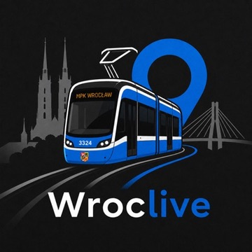
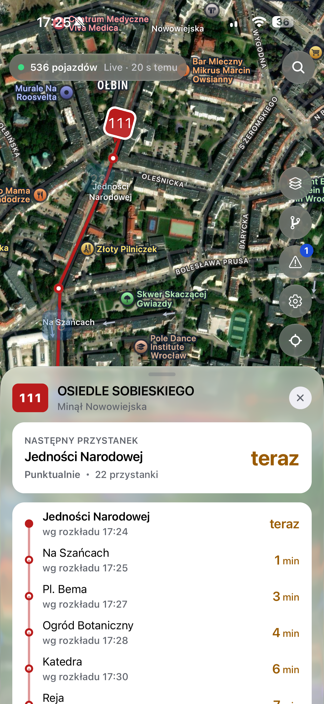
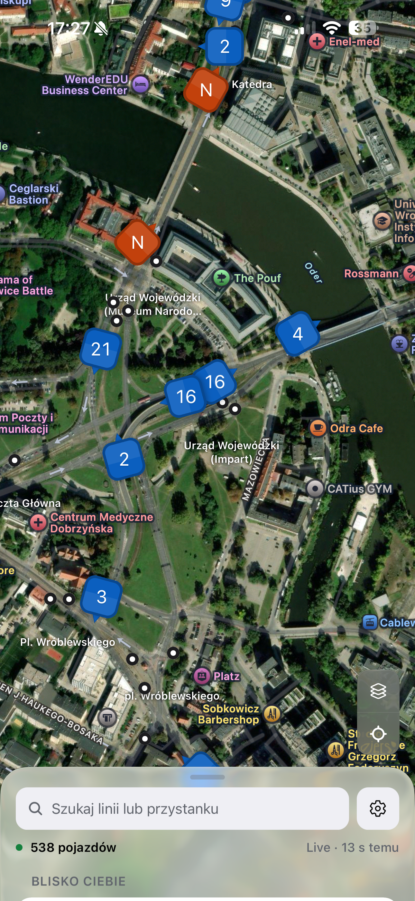
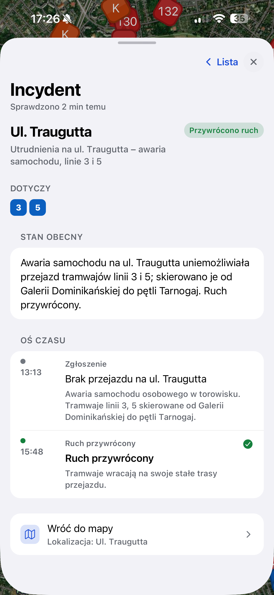

Wiesz, kiedy wyjść z domu
Tak wygląda tablica przystanku w aplikacji, tylko że tu jest w przeglądarce i też działa: to prawdziwe odjazdy, liczone od tej chwili. Zielone minuty liczone są z pozycji pojazdu, który już jedzie; bursztynowe pochodzą z rozkładu.
Plac Grunwaldzki
Wszystkie perony w promieniu 200 m.
Bez otwierania aplikacji
Najważniejsze rzeczy dochodzą do Ciebie same: na ekran początkowy, na ekran blokady i jako powiadomienie. Poniżej wypełnione tymi samymi danymi co tablica wyżej.
Widżet ulubionego przystanku
Odjazdy z przystanku, który oznaczysz gwiazdką, na ekranie początkowym albo blokady. Odjazdy, na które nie zdążysz dojść, są przygaszone.
Odliczanie na ekranie blokady
Wybierz pojazd i przystanek, a Live Activity odlicza minuty do przyjazdu lub przystanki do wysiadki. Powiadomienie przychodzi chwilę wcześniej, a czas wybierasz Ty.

Wczytuję ostatni komunikat…
Utrudnienia na Twoich liniach
Wykolejenie, objazd, zablokowane torowisko: powiadomienie przychodzi, nawet gdy aplikacja jest zamknięta. Tylko o liniach, które wybierzesz. Wyżej ostatni prawdziwy komunikat.
Mapa, która mówi, dokąd kto jedzie
- Kierunek, a nie tylko kropka
- Oba kierunki linii jadą tą samą ulicą. wroclive bierze pod uwagę kurs pojazdu, więc pokazuje właściwą pętlę i przystanki, które jeszcze przed nim są.
- Opóźnienie, jeśli da się je ustalić
- Gdy kursu nie da się dopasować do rozkładu, aplikacja nie zgaduje. Pokazuje pozostały czas jazdy zamiast wymyślonych minut spóźnienia.
- Zapisane przejazdy
- Dom → praca jako jeden przycisk: tylko te kursy, które tam dojeżdżają, z godziną dojazdu i przypomnieniem, kiedy wyjść.
- Bez konta, bez reklam
- Nic nie trzeba zakładać. Twoja lokalizacja zostaje w telefonie.



Skąd wroclive wie, gdzie jest pojazd?
Z publicznego punktu końcowego MPK z pozycjami pojazdów, odpytywanego co 10 sekund, i z miejskiego rozkładu GTFS. Obie rzeczy są otwartymi danymi — nic nie pochodzi z zamkniętego API ani z ręcznych wpisów.
Czy aplikacja jest darmowa?
Tak. Bez opłat, bez kont, bez reklam i bez zakupów w aplikacji.
Czy jest wersja na Androida?
W App Store jest wersja na iPhone'a. Na Androidzie i na komputerze działa ta sama mapa w przeglądarce — z tymi samymi danymi i bez instalacji.
Dlaczego pojazd stoi w miejscu albo znika z mapy?
wroclive pokazuje dokładnie to, co nadaje pojazd. Kiedy nadajnik milczy, pozycja się nie zmienia, a po dłuższej przerwie pojazd znika z mapy — zamiast udawać, że jedzie dalej.
Skąd biorą się minuty opóźnienia?
Feed MPK nie podaje numeru kursu, więc wroclive rzutuje pozycję pojazdu na trasę i sprawdza, który rozkładowy kurs byłby dokładnie w tym miejscu o tej godzinie. Jeśli żaden nie pasuje wystarczająco blisko, aplikacja nie zgaduje — pokazuje pozostały czas jazdy zamiast wymyślonego opóźnienia.
Na czym działają widżet i Live Activity?
Na iPhonie z iOS 16.4 lub nowszym; widżet z wyborem przystanku wymaga iOS 17. Bez otwierania aplikacji widżet pokazuje odjazdy z ostatniego odświeżenia, a gdy te się skończą, prosi o otwarcie aplikacji zamiast pokazywać nieaktualne godziny.
Następny tramwaj już gdzieś jedzie
Zobacz gdzie: w aplikacji na iPhone'a albo na mapie w przeglądarce.